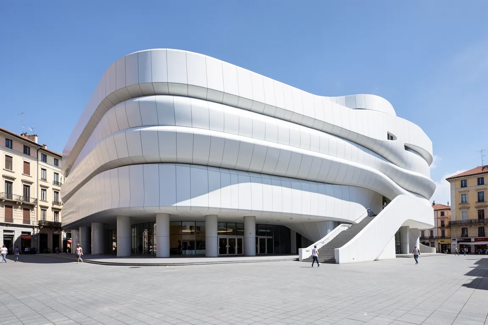

Здания, нарисованные алгоритмом: непрерывные изогнутые оболочки, плавные переходы и ни одной повторяющейся детали. Zaha Hadid Architects и Патрик Шумахер сделали из фасада, крыши и пола одно текучее поле, построенное цифровым производством.

Главная идея
Проект — система связанных параметров, поэтому каждая часть может отличаться и следовать другим в плавном градиенте: одно текучее поле заменяет жёсткий повторяющийся элемент.
Принципы дизайна
Заменяйте жёсткий повторяющийся элемент непрерывной поверхностью: крыша, стена и пол переходят друг в друга без ребра.
Ведите форму параметрами: конструкция, дневной свет, потоки людей и ограничения производства задают форму скриптом.
Различайте части плавным градиентом, чтобы каждая панель, импост и узел немного отличался от соседа.
Берите оболочку двойной кривизны из панелей типового размера 1,5–3 м и скрытый стальной пространственный каркас под ней.
Делайте план полем: пути, комнаты и ландшафт текут вместе, а у маршрута нет острого угла.
Проектируйте цифровыми инструментами от первого эскиза до производства, чтобы модель была и рабочим чертежом.
Антипаттерны
Ортогональные коробки, повторяющиеся одинаковые пролёты и плоские фасады
Накладной исторический орнамент и символический пастиш
Острые несвязанные осколки без непрерывности поверхности
Случайные «капли» без связи с параметром
Единственный повторяющийся модуль на всей оболочке
Видимые стыки и рёбра, ломающие течение поверхности